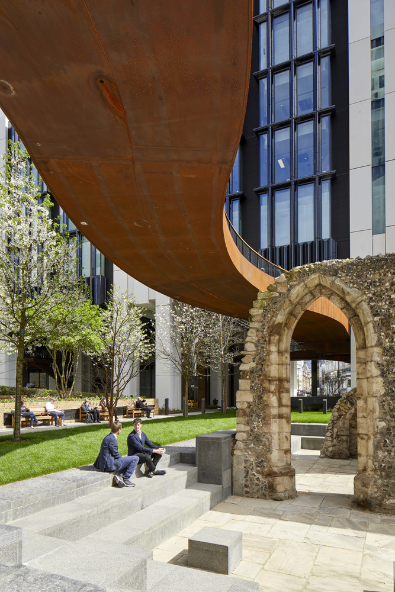
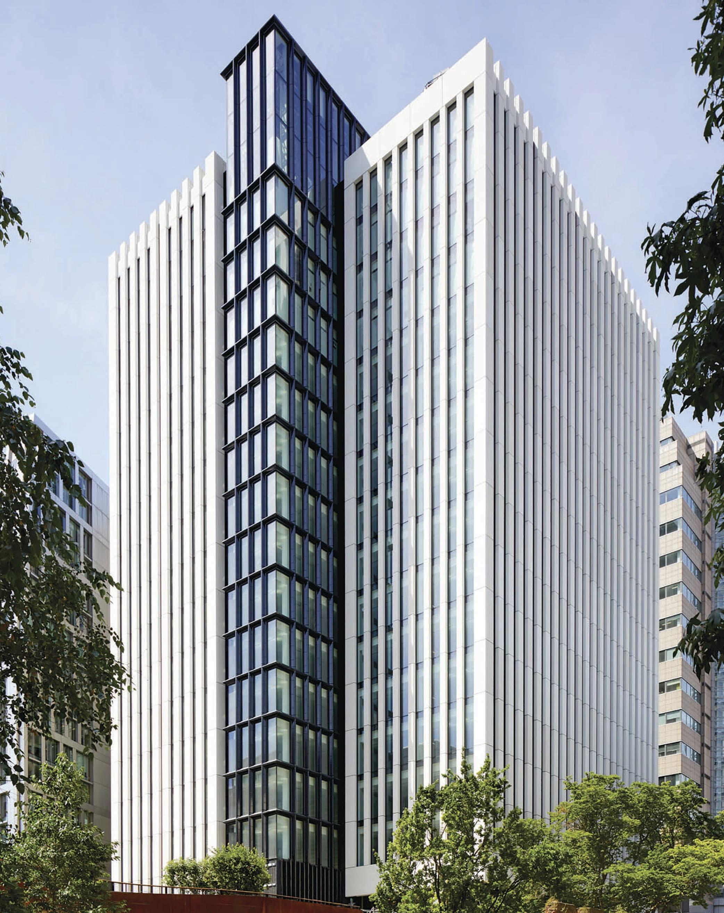
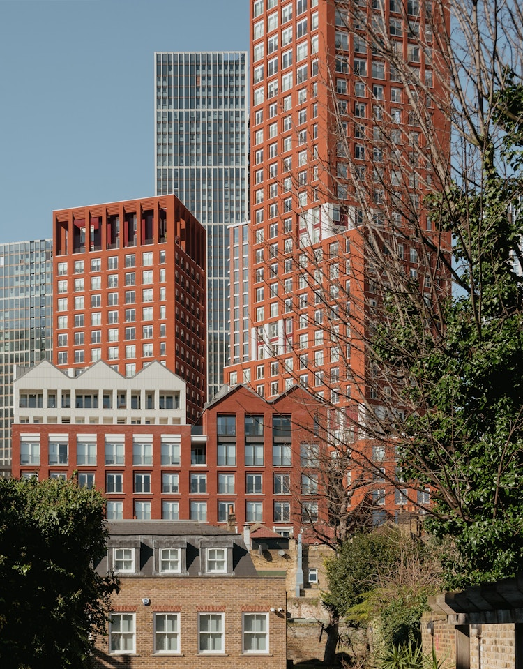
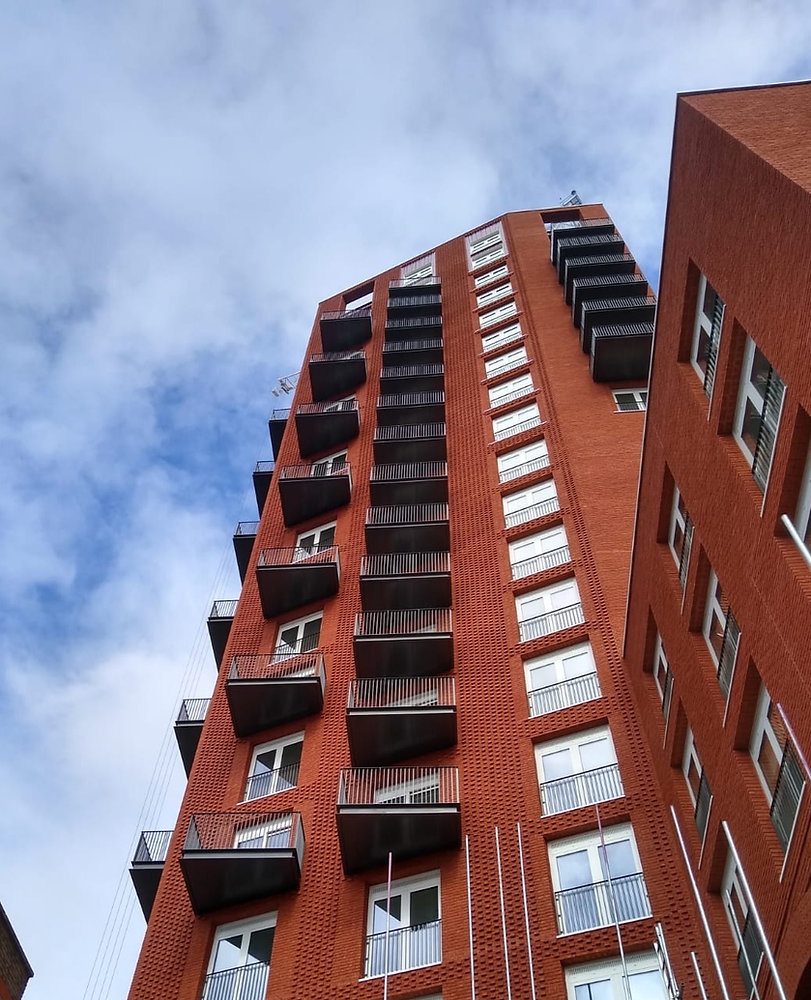

Peter Manthorpe
Peter Manthorpe BEng (Hons) is a structural engineer with over a decade of experience across major commercial developments, education, leisure and residential projects.
Peter began his career at WSP, progressing from Graduate to Senior Structural Engineer and working on some of London's significant large-scale developments. This early experience provided a strong grounding in the design of complex steel and reinforced concrete structures, multidisciplinary coordination and the delivery of major construction projects.
In recent years, Peter's work has focused increasingly on residential and architect-led projects. Over the past five years he has worked on more than 1,000 residential schemes, ranging from individual beam designs and structural alterations through to extensions, loft conversions, substantial refurbishments and complete new-build homes.
This combination of major-project engineering and extensive residential experience now informs the approach at Jack Olivia — rigorous structural design delivered with the accessibility, speed and practical understanding of a smaller independent consultancy.
London Wall Place


Peter formed part of the structural engineering team delivering 1 London Wall Place and 2 London Wall Place, a major commercial development in the City of London.
His work included the design of castellated steel floor beams across the development, together with steel baseplate design and associated structural elements.
At 2 London Wall Place, Peter also worked on the substantial first-floor transfer truss supporting the building above, including the large cantilevering floor structure and the transfer of loads from approximately 12 storeys of structure above.
The project provided extensive experience in complex steel-framed structures, long-span design, load transfer and the coordination required on a major central London development.
Keybridge House


Peter worked on the structural design of Keybridge House, a major residential-led development in Vauxhall.
His work focused principally on reinforced concrete design, including the ground-floor transfer structure and substantial reinforced concrete transfer beams required to redistribute loads from the building above.
Peter also designed a number of the reinforced concrete floor structures throughout the development.
The project provided significant experience in reinforced concrete frame design, transfer structures and the challenges associated with delivering large, complex residential buildings.
The Gym Group
Peter has undertaken structural engineering design for The Gym Group, including steel portal-frame structures where gym use introduces loading requirements beyond those associated with conventional floor occupancy.
This work required consideration of the heavier and sometimes concentrated loads associated with gym equipment and the way these loads interact with the supporting structure.
Fox Hill Primary School
Peter designed the steel frame for Fox Hill Primary School in London, providing structural engineering input for the new building independently of his earlier work at WSP.
The project added further experience in the design and coordination of steel-framed buildings within the education sector.
1,000+ residential projects over the past five years
Residential engineering has formed the majority of Peter's work over the last five years.
Working extensively across Sussex, London and the wider South East, with projects extending as far west as Lyme Regis, Peter has provided structural engineering services on more than 1,000 residential schemes.
These have ranged from relatively straightforward structural interventions to substantial alterations and complete new-build properties, including:
- load-bearing wall removals and structural openings;
- rear and side extensions;
- loft conversions;
- large openings and bifold structures;
- structural alterations and remodelling;
- foundation design and assessment;
- structural inspections and defect investigations;
- timber, masonry, steel and reinforced concrete design;
- substantial residential refurbishments; and
- new-build homes.
This volume of residential work has provided considerable experience of existing buildings and the unexpected conditions that are often uncovered during construction. It has also developed a practical understanding of how structural details are actually built on site — something that remains central to the way Peter approaches engineering today.
Through his work with Ellis Structures, Peter has also provided structural engineering services for a number of established national businesses, including:
This work has included structural assessment and design associated with alterations to existing buildings and the installation of specialist equipment.
Peter established Jack Olivia Structural Engineers to bring together the different strands of his experience — the technical discipline gained from major engineering projects, extensive knowledge of residential structures and a practical understanding of construction and development.
The practice deliberately remains personal.
Clients, architects and contractors deal directly with Peter throughout their project, from the initial conversation and structural concept through to detailed design and queries arising during construction.
The aim is simple: considered structural engineering, practical solutions and an engineer who is accessible when the project needs him.